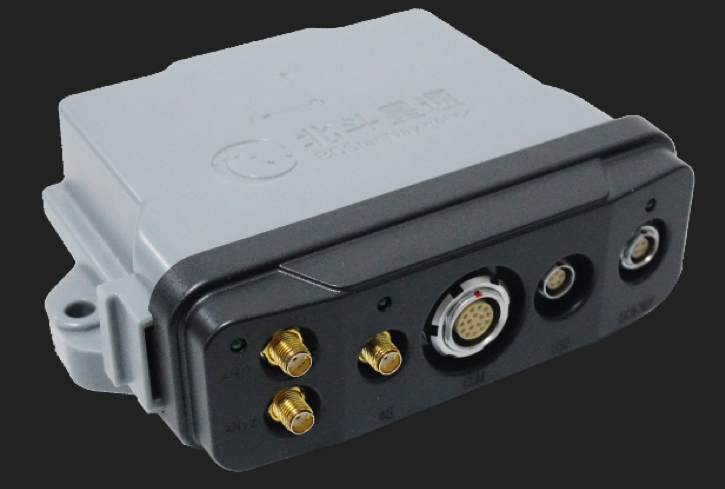

Npos320 Guide
BDStar Navigation NPOS is an integrated INS receiver, which has GNSS receiver and IMU included in the device.

Installation

Data Protocol Parse
Typical data protocols commonly used is INSPVAXA ，more detail about data protocol please see NovAtel《OEM7 Commands and Logs Reference Manual》
Npos320 Configration：
SETIMUEVENT IN EVENT1
CONNECTIMU SPI INVENSENSE_IAM20680
SETINSPROFILE LAND_PLUS
SETINSTRANSLATION ANT1 0.742 0.660 -0.759 0.05 0.05 0.05
SETINSTRANSLATION ANT2 -0.398 0.660 -0.759 0.05 0.05 0.05
SETINSROTATION RBV 0 180 0 5 5 5
SETINSROTATION RBV 0 0 0 5 5 5
SETINSTRANSLATION USER 0 0 0
ALIGNMENTMODE AIDED_TRANSFER
ALIGNMENTMODE UNAIDED
SETINITAZIMUTH 180 5
SAVECONFIG
 WARNING: Modify the SETINSTRANSLATIONT line based on the actual measurement (of the antenna and the IMU offset). ANT1 is for primary antenna which is required, and ANT2 is for secondary antenna and it is optional.
WARNING: Modify the SETINSTRANSLATIONT line based on the actual measurement (of the antenna and the IMU offset). ANT1 is for primary antenna which is required, and ANT2 is for secondary antenna and it is optional.
For example:
SETINSTRANSLATION ANT1 -0.05 0.5 0.8 0.05 0.05 0.08
The first 3 numbers indicate the result of the lever arm distance measurement. The last 3 numbers are the uncertainty of the measurement.
Disclaimer
This device is Apollo Platform Supported